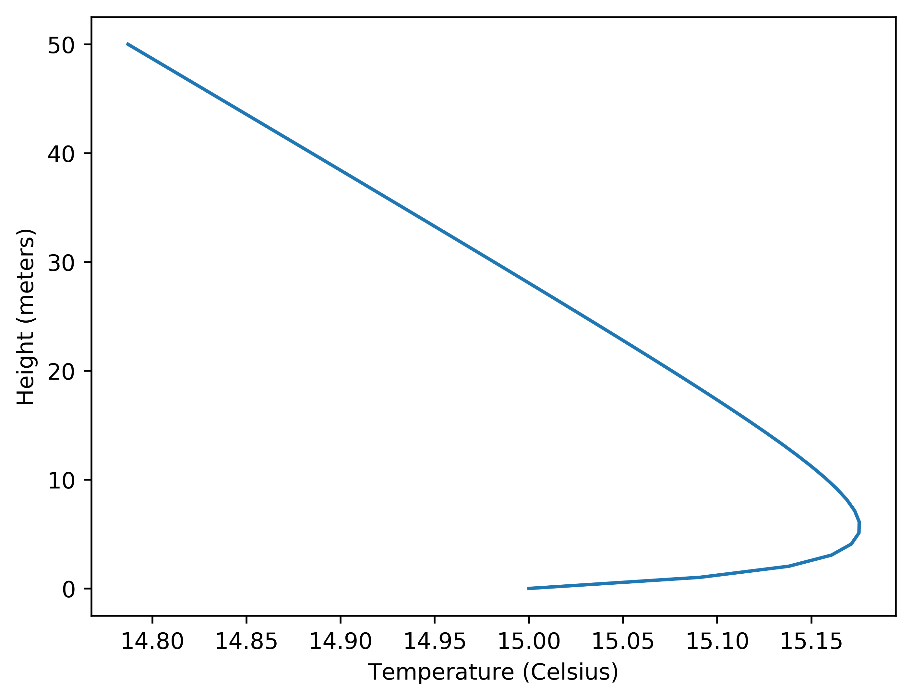
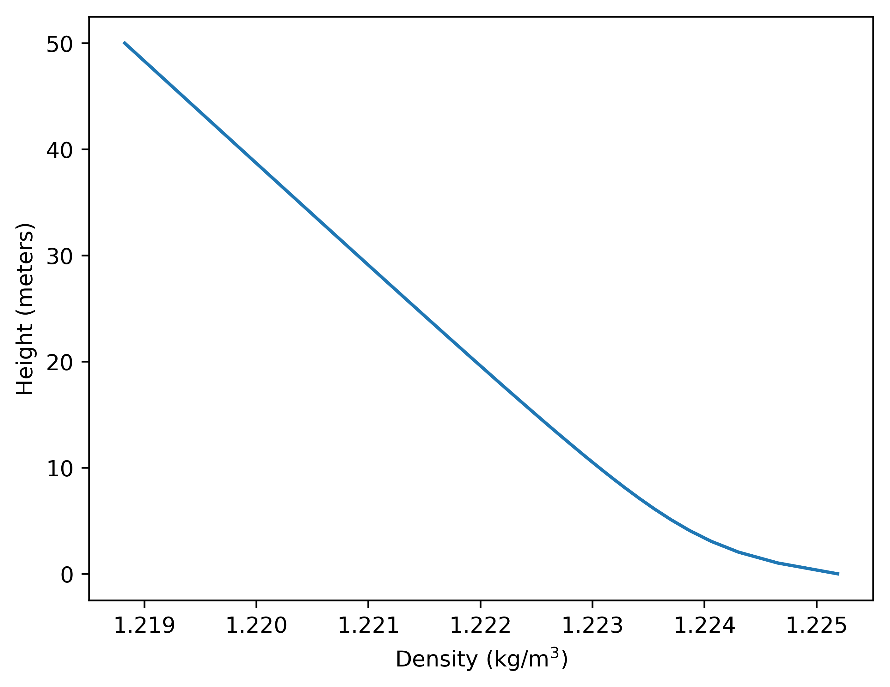
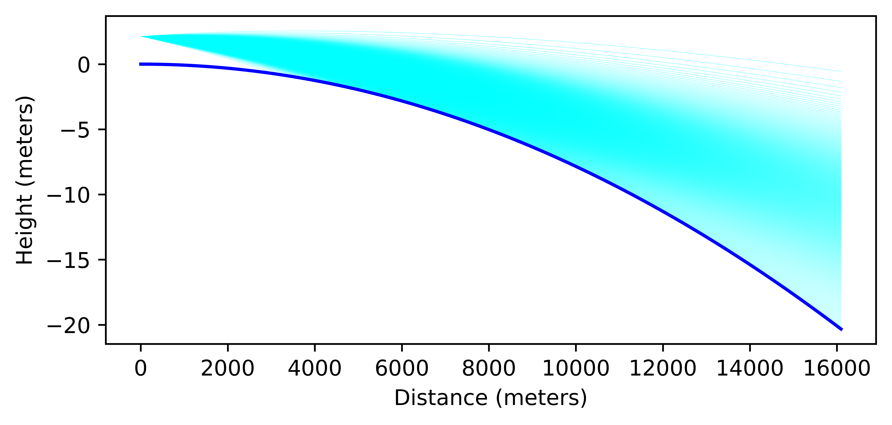

Laser Tests Over Cool Lake¶
back to Examples
In this example we use the refraction calculators to calculate the trajectory of a laser beam over the surface of the earth. In this case we simulate an atmosphere which has cool air near the surface of the earth which creates the effect of bending the laser light down towards the surface of the earth.
1 2 3 4 5 6 7 8 9 10 11 12 13 14 15 16 17 18 19 20 21 22 23 24 25 26 27 28 29 30 31 32 33 34 35 36 37 38 39 40 41 42 43 44 45 46 47 48 49 50 51 52 53 54 55 56 57 58 59 60 61 62 63 64 65 66 67 68 69 70 71 72 73 74 75 76 77 78 79 | import numpy as np
import matplotlib.pyplot as plt
from refraction_render.calcs import CurveCalc,CurveNoRefraction
from refraction_render.misc import mi_to_m,ft_to_m
from scipy.special import erf
from scipy.optimize import bisect
# guassian spaced angles to replicate the intensity
# of a laser as it exits the device.
def C(x,s):
return 0.5*(1+erf(x/(s*np.sqrt(2.0))))
P = np.linspace(0,1,501)[1:-1]
beam_width = 0.02 #degrees
angles = []
for p in P:
a = bisect(lambda x:C(x,beam_width/2)-p,-80,80)
angles.append(a)
def smooth_f(x,a=1):
return np.abs((x+a*np.logaddexp(x/a,-x/a))/2.0)
def T_prof(h):
e=np.nan_to_num(np.exp(-smooth_f(h/1)**0.5))
return -0.5*e
calc = CurveCalc(T_prof=T_prof)
a_mid = 0.015
d_max = mi_to_m(10)
d = np.linspace(0,d_max,101)
c = np.sin(d/calc.R0)
s = np.cos(d/calc.R0)
y_min = calc.R0*s[0]
angles = np.asarray(angles) - a_mid
n_v = len(angles)
#plotting temperature profile
h = np.linspace(0,50)
plt.plot(calc.atm_model.T(h),h)
plt.xlabel("Temperature (Celsius)")
plt.ylabel("Height (meters)")
plt.savefig("T_prof.png",bbox_inches="tight",dpi=500)
plt.clf()
plt.plot(calc.atm_model.rho(h),h)
plt.xlabel("Density (kg/m$^3$)")
plt.ylabel("Height (meters)")
plt.savefig("rho_prof.png",bbox_inches="tight",dpi=500)
plt.clf()
sol = calc.solve_ivp(d_max,ft_to_m(7),alpha=angles,
dense_output=True,atol=1.1e-7,rtol=1.1e-7)
r = sol.sol(d)[:n_v].copy()
for rr in r[:]:
mask = rr < 0
i = np.argmax(mask)
if np.any(mask):
plt.plot(c[:i]*(calc.R0+rr[:i]),s[:i]*(calc.R0+rr[:i])-y_min,
color="cyan",marker="",linewidth=0.1)
else:
plt.plot(c*(calc.R0+rr),s*(calc.R0+rr)-y_min,
color="cyan",marker="",linewidth=0.1)
plt.plot(calc.R0*c,calc.R0*(s-s[0]),color="blue")
plt.axes().set_aspect(300)
plt.ylabel("Height (meters)")
plt.xlabel("Distance (meters)")
plt.savefig("lake_test.png",bbox_inches="tight",dpi=1000)
|
Instead of using the renderer built into the package we use Matplotlib to plot the actual trajectories of the rays. The model for the atmosphere uses this Temperature profile:
{kind=link}
That can be used to calculate the air density as a function of height
{kind=link}
which we can then convert into an index of refraction using the refractivity. We show the results of a simulation of various light rays (individual lines in the image below) coming out of a source (the laser) at 7 ft above the water level shining light over 10.3 miles to the observers on the other side. The ray angles are spaced out to represent a guasian distribution of a width of 0.02 degrees which is supposed to simulate the intensity of the beam itself, therefore from the image below the closer together the lines appear the more indense the beam is. The beam is angled down to get the maximum intensity reaching the other side of the lake.
{kind=link}
The conclusion from this simulation is that when there is a layer of cool air above the surface of the earth the Laser light is bent downwards which means it can be seen at all heights on the opposite side of the lake with the intensity of the light depending on the height. These results have giving some people the impression that the earth is flat however this conclusion is lacking the sophisticated analysis presented here.
back to Examples